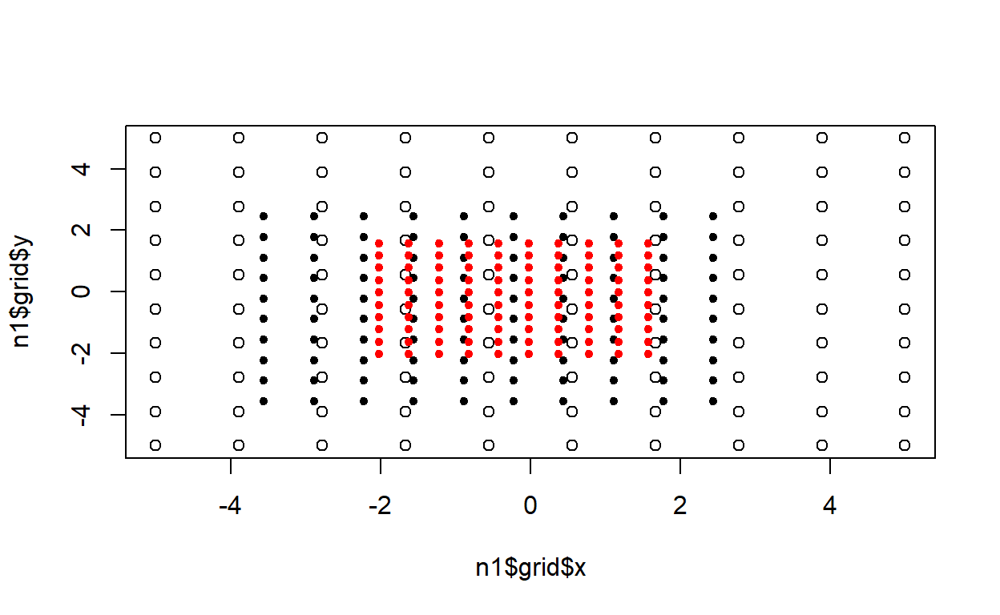

#> Starting Parameter Search
#> Parameter search is an iterative grid search algorithm that seeks the parameters that minimize
#> an objective cost function given a set of parameter bounds.
#> Number of splits set to: 10
#> Mimimum bounds provided for x, y are: -5, -5
#> Maximum bounds provided for x, y are: 5, 5
#> 2021-04-16 08:19:13: New optimal parameter set found for n = 1: -5, -5, 50
#> 2021-04-16 08:19:13: New optimal parameter set found for n = 1: -3.88888888888889, -5, 40.1234567901235
#> 2021-04-16 08:19:13: New optimal parameter set found for n = 1: -2.77777777777778, -5, 32.7160493827161
#> 2021-04-16 08:19:13: New optimal parameter set found for n = 1: -1.66666666666667, -5, 27.7777777777778
#> 2021-04-16 08:19:13: New optimal parameter set found for n = 1: -0.555555555555555, -5, 25.3086419753086
#> 2021-04-16 08:19:13: New optimal parameter set found for n = 1: 0.555555555555555, -5, 25.3086419753086
#> 2021-04-16 08:19:13: New optimal parameter set found for n = 1: 1.66666666666667, -5, 27.7777777777778
#> 2021-04-16 08:19:13: New optimal parameter set found for n = 1: 2.77777777777778, -5, 32.7160493827161
#> 2021-04-16 08:19:13: New optimal parameter set found for n = 1: 3.88888888888889, -5, 40.1234567901235
#> 2021-04-16 08:19:13: New optimal parameter set found for n = 1: 5, -5, 50
#> 2021-04-16 08:19:13: New optimal parameter set found for n = 1: -5, -3.88888888888889, 40.1234567901235
#> 2021-04-16 08:19:13: New optimal parameter set found for n = 1: -3.88888888888889, -3.88888888888889, 30.2469135802469
#> 2021-04-16 08:19:13: New optimal parameter set found for n = 1: -2.77777777777778, -3.88888888888889, 22.8395061728395
#> 2021-04-16 08:19:13: New optimal parameter set found for n = 1: -1.66666666666667, -3.88888888888889, 17.9012345679012
#> 2021-04-16 08:19:13: New optimal parameter set found for n = 1: -0.555555555555555, -3.88888888888889, 15.4320987654321
#> 2021-04-16 08:19:13: New optimal parameter set found for n = 1: 0.555555555555555, -3.88888888888889, 15.4320987654321
#> 2021-04-16 08:19:13: New optimal parameter set found for n = 1: 1.66666666666667, -3.88888888888889, 17.9012345679012
#> 2021-04-16 08:19:13: New optimal parameter set found for n = 1: 2.77777777777778, -3.88888888888889, 22.8395061728395
#> 2021-04-16 08:19:13: New optimal parameter set found for n = 1: 3.88888888888889, -3.88888888888889, 30.2469135802469
#> 2021-04-16 08:19:13: New optimal parameter set found for n = 1: 5, -3.88888888888889, 40.1234567901235
#> 2021-04-16 08:19:13: New optimal parameter set found for n = 1: -5, -2.77777777777778, 32.7160493827161
#> 2021-04-16 08:19:13: New optimal parameter set found for n = 1: -3.88888888888889, -2.77777777777778, 22.8395061728395
#> 2021-04-16 08:19:13: New optimal parameter set found for n = 1: -2.77777777777778, -2.77777777777778, 15.4320987654321
#> 2021-04-16 08:19:13: New optimal parameter set found for n = 1: -1.66666666666667, -2.77777777777778, 10.4938271604938
#> 2021-04-16 08:19:13: New optimal parameter set found for n = 1: -0.555555555555555, -2.77777777777778, 8.02469135802469
#> 2021-04-16 08:19:13: New optimal parameter set found for n = 1: 0.555555555555555, -2.77777777777778, 8.02469135802469
#> 2021-04-16 08:19:13: New optimal parameter set found for n = 1: 1.66666666666667, -2.77777777777778, 10.4938271604938
#> 2021-04-16 08:19:13: New optimal parameter set found for n = 1: 2.77777777777778, -2.77777777777778, 15.4320987654321
#> 2021-04-16 08:19:13: New optimal parameter set found for n = 1: 3.88888888888889, -2.77777777777778, 22.8395061728395
#> 2021-04-16 08:19:13: New optimal parameter set found for n = 1: 5, -2.77777777777778, 32.7160493827161
#> 2021-04-16 08:19:13: New optimal parameter set found for n = 1: -5, -1.66666666666667, 27.7777777777778
#> 2021-04-16 08:19:13: New optimal parameter set found for n = 1: -3.88888888888889, -1.66666666666667, 17.9012345679012
#> 2021-04-16 08:19:13: New optimal parameter set found for n = 1: -2.77777777777778, -1.66666666666667, 10.4938271604938
#> 2021-04-16 08:19:13: New optimal parameter set found for n = 1: -1.66666666666667, -1.66666666666667, 5.55555555555555
#> 2021-04-16 08:19:13: New optimal parameter set found for n = 1: -0.555555555555555, -1.66666666666667, 3.08641975308642
#> 2021-04-16 08:19:13: New optimal parameter set found for n = 1: 0.555555555555555, -1.66666666666667, 3.08641975308642
#> 2021-04-16 08:19:13: New optimal parameter set found for n = 1: 1.66666666666667, -1.66666666666667, 5.55555555555556
#> 2021-04-16 08:19:13: New optimal parameter set found for n = 1: 2.77777777777778, -1.66666666666667, 10.4938271604938
#> 2021-04-16 08:19:13: New optimal parameter set found for n = 1: 3.88888888888889, -1.66666666666667, 17.9012345679012
#> 2021-04-16 08:19:13: New optimal parameter set found for n = 1: 5, -1.66666666666667, 27.7777777777778
#> 2021-04-16 08:19:13: New optimal parameter set found for n = 1: -5, -0.555555555555555, 25.3086419753086
#> 2021-04-16 08:19:13: New optimal parameter set found for n = 1: -3.88888888888889, -0.555555555555555, 15.4320987654321
#> 2021-04-16 08:19:13: New optimal parameter set found for n = 1: -2.77777777777778, -0.555555555555555, 8.02469135802469
#> 2021-04-16 08:19:13: New optimal parameter set found for n = 1: -1.66666666666667, -0.555555555555555, 3.08641975308642
#> 2021-04-16 08:19:13: New optimal parameter set found for n = 1: -0.555555555555555, -0.555555555555555, 0.617283950617283
#> 2021-04-16 08:19:13: New optimal parameter set found for n = 1: 0.555555555555555, -0.555555555555555, 0.617283950617283
#> 2021-04-16 08:19:13: New optimal parameter set found for n = 1: 1.66666666666667, -0.555555555555555, 3.08641975308642
#> 2021-04-16 08:19:13: New optimal parameter set found for n = 1: 2.77777777777778, -0.555555555555555, 8.0246913580247
#> 2021-04-16 08:19:13: New optimal parameter set found for n = 1: 3.88888888888889, -0.555555555555555, 15.4320987654321
#> 2021-04-16 08:19:13: New optimal parameter set found for n = 1: 5, -0.555555555555555, 25.3086419753086
#> 2021-04-16 08:19:13: New optimal parameter set found for n = 1: -5, 0.555555555555555, 25.3086419753086
#> 2021-04-16 08:19:13: New optimal parameter set found for n = 1: -3.88888888888889, 0.555555555555555, 15.4320987654321
#> 2021-04-16 08:19:13: New optimal parameter set found for n = 1: -2.77777777777778, 0.555555555555555, 8.02469135802469
#> 2021-04-16 08:19:13: New optimal parameter set found for n = 1: -1.66666666666667, 0.555555555555555, 3.08641975308642
#> 2021-04-16 08:19:13: New optimal parameter set found for n = 1: -0.555555555555555, 0.555555555555555, 0.617283950617283
#> 2021-04-16 08:19:13: New optimal parameter set found for n = 1: 0.555555555555555, 0.555555555555555, 0.617283950617283
#> 2021-04-16 08:19:13: New optimal parameter set found for n = 1: 1.66666666666667, 0.555555555555555, 3.08641975308642
#> 2021-04-16 08:19:13: New optimal parameter set found for n = 1: 2.77777777777778, 0.555555555555555, 8.0246913580247
#> 2021-04-16 08:19:13: New optimal parameter set found for n = 1: 3.88888888888889, 0.555555555555555, 15.4320987654321
#> 2021-04-16 08:19:13: New optimal parameter set found for n = 1: 5, 0.555555555555555, 25.3086419753086
#> 2021-04-16 08:19:13: New optimal parameter set found for n = 1: -5, 1.66666666666667, 27.7777777777778
#> 2021-04-16 08:19:13: New optimal parameter set found for n = 1: -3.88888888888889, 1.66666666666667, 17.9012345679012
#> 2021-04-16 08:19:13: New optimal parameter set found for n = 1: -2.77777777777778, 1.66666666666667, 10.4938271604938
#> 2021-04-16 08:19:13: New optimal parameter set found for n = 1: -1.66666666666667, 1.66666666666667, 5.55555555555556
#> 2021-04-16 08:19:13: New optimal parameter set found for n = 1: -0.555555555555555, 1.66666666666667, 3.08641975308642
#> 2021-04-16 08:19:13: New optimal parameter set found for n = 1: 0.555555555555555, 1.66666666666667, 3.08641975308642
#> 2021-04-16 08:19:13: New optimal parameter set found for n = 1: 1.66666666666667, 1.66666666666667, 5.55555555555556
#> 2021-04-16 08:19:13: New optimal parameter set found for n = 1: 2.77777777777778, 1.66666666666667, 10.4938271604938
#> 2021-04-16 08:19:13: New optimal parameter set found for n = 1: 3.88888888888889, 1.66666666666667, 17.9012345679012
#> 2021-04-16 08:19:13: New optimal parameter set found for n = 1: 5, 1.66666666666667, 27.7777777777778
#> 2021-04-16 08:19:13: New optimal parameter set found for n = 1: -5, 2.77777777777778, 32.7160493827161
#> 2021-04-16 08:19:13: New optimal parameter set found for n = 1: -3.88888888888889, 2.77777777777778, 22.8395061728395
#> 2021-04-16 08:19:13: New optimal parameter set found for n = 1: -2.77777777777778, 2.77777777777778, 15.4320987654321
#> 2021-04-16 08:19:13: New optimal parameter set found for n = 1: -1.66666666666667, 2.77777777777778, 10.4938271604938
#> 2021-04-16 08:19:13: New optimal parameter set found for n = 1: -0.555555555555555, 2.77777777777778, 8.0246913580247
#> 2021-04-16 08:19:13: New optimal parameter set found for n = 1: 0.555555555555555, 2.77777777777778, 8.0246913580247
#> 2021-04-16 08:19:13: New optimal parameter set found for n = 1: 1.66666666666667, 2.77777777777778, 10.4938271604938
#> 2021-04-16 08:19:13: New optimal parameter set found for n = 1: 2.77777777777778, 2.77777777777778, 15.4320987654321
#> 2021-04-16 08:19:13: New optimal parameter set found for n = 1: 3.88888888888889, 2.77777777777778, 22.8395061728395
#> 2021-04-16 08:19:13: New optimal parameter set found for n = 1: 5, 2.77777777777778, 32.7160493827161
#> 2021-04-16 08:19:13: New optimal parameter set found for n = 1: -5, 3.88888888888889, 40.1234567901235
#> 2021-04-16 08:19:13: New optimal parameter set found for n = 1: -3.88888888888889, 3.88888888888889, 30.2469135802469
#> 2021-04-16 08:19:13: New optimal parameter set found for n = 1: -2.77777777777778, 3.88888888888889, 22.8395061728395
#> 2021-04-16 08:19:13: New optimal parameter set found for n = 1: -1.66666666666667, 3.88888888888889, 17.9012345679012
#> 2021-04-16 08:19:13: New optimal parameter set found for n = 1: -0.555555555555555, 3.88888888888889, 15.4320987654321
#> 2021-04-16 08:19:13: New optimal parameter set found for n = 1: 0.555555555555555, 3.88888888888889, 15.4320987654321
#> 2021-04-16 08:19:13: New optimal parameter set found for n = 1: 1.66666666666667, 3.88888888888889, 17.9012345679012
#> 2021-04-16 08:19:13: New optimal parameter set found for n = 1: 2.77777777777778, 3.88888888888889, 22.8395061728395
#> 2021-04-16 08:19:13: New optimal parameter set found for n = 1: 3.88888888888889, 3.88888888888889, 30.2469135802469
#> 2021-04-16 08:19:13: New optimal parameter set found for n = 1: 5, 3.88888888888889, 40.1234567901235
#> 2021-04-16 08:19:13: New optimal parameter set found for n = 1: -5, 5, 50
#> 2021-04-16 08:19:13: New optimal parameter set found for n = 1: -3.88888888888889, 5, 40.1234567901235
#> 2021-04-16 08:19:13: New optimal parameter set found for n = 1: -2.77777777777778, 5, 32.7160493827161
#> 2021-04-16 08:19:13: New optimal parameter set found for n = 1: -1.66666666666667, 5, 27.7777777777778
#> 2021-04-16 08:19:13: New optimal parameter set found for n = 1: -0.555555555555555, 5, 25.3086419753086
#> 2021-04-16 08:19:13: New optimal parameter set found for n = 1: 0.555555555555555, 5, 25.3086419753086
#> 2021-04-16 08:19:13: New optimal parameter set found for n = 1: 1.66666666666667, 5, 27.7777777777778
#> 2021-04-16 08:19:13: New optimal parameter set found for n = 1: 2.77777777777778, 5, 32.7160493827161
#> 2021-04-16 08:19:13: New optimal parameter set found for n = 1: 3.88888888888889, 5, 40.1234567901235
#> 2021-04-16 08:19:13: New optimal parameter set found for n = 1: 5, 5, 50
#> Starting Parameter Search
#> Parameter search is an iterative grid search algorithm that seeks the parameters that minimize
#> an objective cost function given a set of parameter bounds.
#> No Progresssion given, default to: 3
#> Number of splits set to: 10
#> Mimimum bounds provided for x, y are: -5, -5
#> Maximum bounds provided for x, y are: 5, 5
#> 2021-04-16 08:19:13: New optimal parameter set found for n = 2: -5, -5, 50
#> 2021-04-16 08:19:13: New optimal parameter set found for n = 2: -3.88888888888889, -5, 40.1234567901235
#> 2021-04-16 08:19:13: New optimal parameter set found for n = 2: -2.77777777777778, -5, 32.7160493827161
#> 2021-04-16 08:19:13: New optimal parameter set found for n = 2: -1.66666666666667, -5, 27.7777777777778
#> 2021-04-16 08:19:13: New optimal parameter set found for n = 2: -0.555555555555555, -5, 25.3086419753086
#> 2021-04-16 08:19:13: New optimal parameter set found for n = 2: 0.555555555555555, -5, 25.3086419753086
#> 2021-04-16 08:19:13: New optimal parameter set found for n = 2: 1.66666666666667, -5, 27.7777777777778
#> 2021-04-16 08:19:13: New optimal parameter set found for n = 2: 2.77777777777778, -5, 32.7160493827161
#> 2021-04-16 08:19:13: New optimal parameter set found for n = 2: 3.88888888888889, -5, 40.1234567901235
#> 2021-04-16 08:19:13: New optimal parameter set found for n = 2: 5, -5, 50
#> 2021-04-16 08:19:13: New optimal parameter set found for n = 2: -5, -3.88888888888889, 40.1234567901235
#> 2021-04-16 08:19:13: New optimal parameter set found for n = 2: -3.88888888888889, -3.88888888888889, 30.2469135802469
#> 2021-04-16 08:19:13: New optimal parameter set found for n = 2: -2.77777777777778, -3.88888888888889, 22.8395061728395
#> 2021-04-16 08:19:13: New optimal parameter set found for n = 2: -1.66666666666667, -3.88888888888889, 17.9012345679012
#> 2021-04-16 08:19:13: New optimal parameter set found for n = 2: -0.555555555555555, -3.88888888888889, 15.4320987654321
#> 2021-04-16 08:19:13: New optimal parameter set found for n = 2: 0.555555555555555, -3.88888888888889, 15.4320987654321
#> 2021-04-16 08:19:13: New optimal parameter set found for n = 2: 1.66666666666667, -3.88888888888889, 17.9012345679012
#> 2021-04-16 08:19:13: New optimal parameter set found for n = 2: 2.77777777777778, -3.88888888888889, 22.8395061728395
#> 2021-04-16 08:19:13: New optimal parameter set found for n = 2: 3.88888888888889, -3.88888888888889, 30.2469135802469
#> 2021-04-16 08:19:13: New optimal parameter set found for n = 2: 5, -3.88888888888889, 40.1234567901235
#> 2021-04-16 08:19:13: New optimal parameter set found for n = 2: -5, -2.77777777777778, 32.7160493827161
#> 2021-04-16 08:19:13: New optimal parameter set found for n = 2: -3.88888888888889, -2.77777777777778, 22.8395061728395
#> 2021-04-16 08:19:13: New optimal parameter set found for n = 2: -2.77777777777778, -2.77777777777778, 15.4320987654321
#> 2021-04-16 08:19:13: New optimal parameter set found for n = 2: -1.66666666666667, -2.77777777777778, 10.4938271604938
#> 2021-04-16 08:19:13: New optimal parameter set found for n = 2: -0.555555555555555, -2.77777777777778, 8.02469135802469
#> 2021-04-16 08:19:13: New optimal parameter set found for n = 2: 0.555555555555555, -2.77777777777778, 8.02469135802469
#> 2021-04-16 08:19:13: New optimal parameter set found for n = 2: 1.66666666666667, -2.77777777777778, 10.4938271604938
#> 2021-04-16 08:19:13: New optimal parameter set found for n = 2: 2.77777777777778, -2.77777777777778, 15.4320987654321
#> 2021-04-16 08:19:13: New optimal parameter set found for n = 2: 3.88888888888889, -2.77777777777778, 22.8395061728395
#> 2021-04-16 08:19:13: New optimal parameter set found for n = 2: 5, -2.77777777777778, 32.7160493827161
#> 2021-04-16 08:19:13: New optimal parameter set found for n = 2: -5, -1.66666666666667, 27.7777777777778
#> 2021-04-16 08:19:13: New optimal parameter set found for n = 2: -3.88888888888889, -1.66666666666667, 17.9012345679012
#> 2021-04-16 08:19:13: New optimal parameter set found for n = 2: -2.77777777777778, -1.66666666666667, 10.4938271604938
#> 2021-04-16 08:19:13: New optimal parameter set found for n = 2: -1.66666666666667, -1.66666666666667, 5.55555555555555
#> 2021-04-16 08:19:13: New optimal parameter set found for n = 2: -0.555555555555555, -1.66666666666667, 3.08641975308642
#> 2021-04-16 08:19:13: New optimal parameter set found for n = 2: 0.555555555555555, -1.66666666666667, 3.08641975308642
#> 2021-04-16 08:19:13: New optimal parameter set found for n = 2: 1.66666666666667, -1.66666666666667, 5.55555555555556
#> 2021-04-16 08:19:13: New optimal parameter set found for n = 2: 2.77777777777778, -1.66666666666667, 10.4938271604938
#> 2021-04-16 08:19:13: New optimal parameter set found for n = 2: 3.88888888888889, -1.66666666666667, 17.9012345679012
#> 2021-04-16 08:19:13: New optimal parameter set found for n = 2: 5, -1.66666666666667, 27.7777777777778
#> 2021-04-16 08:19:13: New optimal parameter set found for n = 2: -5, -0.555555555555555, 25.3086419753086
#> 2021-04-16 08:19:13: New optimal parameter set found for n = 2: -3.88888888888889, -0.555555555555555, 15.4320987654321
#> 2021-04-16 08:19:13: New optimal parameter set found for n = 2: -2.77777777777778, -0.555555555555555, 8.02469135802469
#> 2021-04-16 08:19:13: New optimal parameter set found for n = 2: -1.66666666666667, -0.555555555555555, 3.08641975308642
#> 2021-04-16 08:19:13: New optimal parameter set found for n = 2: -0.555555555555555, -0.555555555555555, 0.617283950617283
#> 2021-04-16 08:19:13: New optimal parameter set found for n = 2: 0.555555555555555, -0.555555555555555, 0.617283950617283
#> 2021-04-16 08:19:13: New optimal parameter set found for n = 2: 1.66666666666667, -0.555555555555555, 3.08641975308642
#> 2021-04-16 08:19:13: New optimal parameter set found for n = 2: 2.77777777777778, -0.555555555555555, 8.0246913580247
#> 2021-04-16 08:19:13: New optimal parameter set found for n = 2: 3.88888888888889, -0.555555555555555, 15.4320987654321
#> 2021-04-16 08:19:13: New optimal parameter set found for n = 2: 5, -0.555555555555555, 25.3086419753086
#> 2021-04-16 08:19:13: New optimal parameter set found for n = 2: -5, 0.555555555555555, 25.3086419753086
#> 2021-04-16 08:19:13: New optimal parameter set found for n = 2: -3.88888888888889, 0.555555555555555, 15.4320987654321
#> 2021-04-16 08:19:13: New optimal parameter set found for n = 2: -2.77777777777778, 0.555555555555555, 8.02469135802469
#> 2021-04-16 08:19:13: New optimal parameter set found for n = 2: -1.66666666666667, 0.555555555555555, 3.08641975308642
#> 2021-04-16 08:19:13: New optimal parameter set found for n = 2: -0.555555555555555, 0.555555555555555, 0.617283950617283
#> 2021-04-16 08:19:13: New optimal parameter set found for n = 2: 0.555555555555555, 0.555555555555555, 0.617283950617283
#> 2021-04-16 08:19:13: New optimal parameter set found for n = 2: 1.66666666666667, 0.555555555555555, 3.08641975308642
#> 2021-04-16 08:19:13: New optimal parameter set found for n = 2: 2.77777777777778, 0.555555555555555, 8.0246913580247
#> 2021-04-16 08:19:13: New optimal parameter set found for n = 2: 3.88888888888889, 0.555555555555555, 15.4320987654321
#> 2021-04-16 08:19:13: New optimal parameter set found for n = 2: 5, 0.555555555555555, 25.3086419753086
#> 2021-04-16 08:19:13: New optimal parameter set found for n = 2: -5, 1.66666666666667, 27.7777777777778
#> 2021-04-16 08:19:13: New optimal parameter set found for n = 2: -3.88888888888889, 1.66666666666667, 17.9012345679012
#> 2021-04-16 08:19:13: New optimal parameter set found for n = 2: -2.77777777777778, 1.66666666666667, 10.4938271604938
#> 2021-04-16 08:19:13: New optimal parameter set found for n = 2: -1.66666666666667, 1.66666666666667, 5.55555555555556
#> 2021-04-16 08:19:13: New optimal parameter set found for n = 2: -0.555555555555555, 1.66666666666667, 3.08641975308642
#> 2021-04-16 08:19:13: New optimal parameter set found for n = 2: 0.555555555555555, 1.66666666666667, 3.08641975308642
#> 2021-04-16 08:19:13: New optimal parameter set found for n = 2: 1.66666666666667, 1.66666666666667, 5.55555555555556
#> 2021-04-16 08:19:13: New optimal parameter set found for n = 2: 2.77777777777778, 1.66666666666667, 10.4938271604938
#> 2021-04-16 08:19:13: New optimal parameter set found for n = 2: 3.88888888888889, 1.66666666666667, 17.9012345679012
#> 2021-04-16 08:19:13: New optimal parameter set found for n = 2: 5, 1.66666666666667, 27.7777777777778
#> 2021-04-16 08:19:13: New optimal parameter set found for n = 2: -5, 2.77777777777778, 32.7160493827161
#> 2021-04-16 08:19:13: New optimal parameter set found for n = 2: -3.88888888888889, 2.77777777777778, 22.8395061728395
#> 2021-04-16 08:19:13: New optimal parameter set found for n = 2: -2.77777777777778, 2.77777777777778, 15.4320987654321
#> 2021-04-16 08:19:13: New optimal parameter set found for n = 2: -1.66666666666667, 2.77777777777778, 10.4938271604938
#> 2021-04-16 08:19:13: New optimal parameter set found for n = 2: -0.555555555555555, 2.77777777777778, 8.0246913580247
#> 2021-04-16 08:19:13: New optimal parameter set found for n = 2: 0.555555555555555, 2.77777777777778, 8.0246913580247
#> 2021-04-16 08:19:13: New optimal parameter set found for n = 2: 1.66666666666667, 2.77777777777778, 10.4938271604938
#> 2021-04-16 08:19:13: New optimal parameter set found for n = 2: 2.77777777777778, 2.77777777777778, 15.4320987654321
#> 2021-04-16 08:19:13: New optimal parameter set found for n = 2: 3.88888888888889, 2.77777777777778, 22.8395061728395
#> 2021-04-16 08:19:13: New optimal parameter set found for n = 2: 5, 2.77777777777778, 32.7160493827161
#> 2021-04-16 08:19:13: New optimal parameter set found for n = 2: -5, 3.88888888888889, 40.1234567901235
#> 2021-04-16 08:19:13: New optimal parameter set found for n = 2: -3.88888888888889, 3.88888888888889, 30.2469135802469
#> 2021-04-16 08:19:13: New optimal parameter set found for n = 2: -2.77777777777778, 3.88888888888889, 22.8395061728395
#> 2021-04-16 08:19:13: New optimal parameter set found for n = 2: -1.66666666666667, 3.88888888888889, 17.9012345679012
#> 2021-04-16 08:19:13: New optimal parameter set found for n = 2: -0.555555555555555, 3.88888888888889, 15.4320987654321
#> 2021-04-16 08:19:13: New optimal parameter set found for n = 2: 0.555555555555555, 3.88888888888889, 15.4320987654321
#> 2021-04-16 08:19:13: New optimal parameter set found for n = 2: 1.66666666666667, 3.88888888888889, 17.9012345679012
#> 2021-04-16 08:19:13: New optimal parameter set found for n = 2: 2.77777777777778, 3.88888888888889, 22.8395061728395
#> 2021-04-16 08:19:13: New optimal parameter set found for n = 2: 3.88888888888889, 3.88888888888889, 30.2469135802469
#> 2021-04-16 08:19:13: New optimal parameter set found for n = 2: 5, 3.88888888888889, 40.1234567901235
#> 2021-04-16 08:19:13: New optimal parameter set found for n = 2: -5, 5, 50
#> 2021-04-16 08:19:13: New optimal parameter set found for n = 2: -3.88888888888889, 5, 40.1234567901235
#> 2021-04-16 08:19:13: New optimal parameter set found for n = 2: -2.77777777777778, 5, 32.7160493827161
#> 2021-04-16 08:19:13: New optimal parameter set found for n = 2: -1.66666666666667, 5, 27.7777777777778
#> 2021-04-16 08:19:13: New optimal parameter set found for n = 2: -0.555555555555555, 5, 25.3086419753086
#> 2021-04-16 08:19:13: New optimal parameter set found for n = 2: 0.555555555555555, 5, 25.3086419753086
#> 2021-04-16 08:19:13: New optimal parameter set found for n = 2: 1.66666666666667, 5, 27.7777777777778
#> 2021-04-16 08:19:13: New optimal parameter set found for n = 2: 2.77777777777778, 5, 32.7160493827161
#> 2021-04-16 08:19:13: New optimal parameter set found for n = 2: 3.88888888888889, 5, 40.1234567901235
#> 2021-04-16 08:19:13: New optimal parameter set found for n = 2: 5, 5, 50
#> Starting Parameter Search
#> Parameter search is an iterative grid search algorithm that seeks the parameters that minimize
#> an objective cost function given a set of parameter bounds.
#> No Progresssion given, default to: 3
#> Number of splits set to: 10
#> Mimimum bounds provided for x, y are: -5, -5
#> Maximum bounds provided for x, y are: 5, 5
#> 2021-04-16 08:19:13: New optimal parameter set found for n = 3: -5, -5, 50
#> 2021-04-16 08:19:13: New optimal parameter set found for n = 3: -3.88888888888889, -5, 40.1234567901235
#> 2021-04-16 08:19:13: New optimal parameter set found for n = 3: -2.77777777777778, -5, 32.7160493827161
#> 2021-04-16 08:19:13: New optimal parameter set found for n = 3: -1.66666666666667, -5, 27.7777777777778
#> 2021-04-16 08:19:13: New optimal parameter set found for n = 3: -0.555555555555555, -5, 25.3086419753086
#> 2021-04-16 08:19:13: New optimal parameter set found for n = 3: 0.555555555555555, -5, 25.3086419753086
#> 2021-04-16 08:19:13: New optimal parameter set found for n = 3: 1.66666666666667, -5, 27.7777777777778
#> 2021-04-16 08:19:13: New optimal parameter set found for n = 3: 2.77777777777778, -5, 32.7160493827161
#> 2021-04-16 08:19:13: New optimal parameter set found for n = 3: 3.88888888888889, -5, 40.1234567901235
#> 2021-04-16 08:19:13: New optimal parameter set found for n = 3: 5, -5, 50
#> 2021-04-16 08:19:13: New optimal parameter set found for n = 3: -5, -3.88888888888889, 40.1234567901235
#> 2021-04-16 08:19:13: New optimal parameter set found for n = 3: -3.88888888888889, -3.88888888888889, 30.2469135802469
#> 2021-04-16 08:19:13: New optimal parameter set found for n = 3: -2.77777777777778, -3.88888888888889, 22.8395061728395
#> 2021-04-16 08:19:13: New optimal parameter set found for n = 3: -1.66666666666667, -3.88888888888889, 17.9012345679012
#> 2021-04-16 08:19:13: New optimal parameter set found for n = 3: -0.555555555555555, -3.88888888888889, 15.4320987654321
#> 2021-04-16 08:19:13: New optimal parameter set found for n = 3: 0.555555555555555, -3.88888888888889, 15.4320987654321
#> 2021-04-16 08:19:13: New optimal parameter set found for n = 3: 1.66666666666667, -3.88888888888889, 17.9012345679012
#> 2021-04-16 08:19:13: New optimal parameter set found for n = 3: 2.77777777777778, -3.88888888888889, 22.8395061728395
#> 2021-04-16 08:19:13: New optimal parameter set found for n = 3: 3.88888888888889, -3.88888888888889, 30.2469135802469
#> 2021-04-16 08:19:13: New optimal parameter set found for n = 3: 5, -3.88888888888889, 40.1234567901235
#> 2021-04-16 08:19:13: New optimal parameter set found for n = 3: -5, -2.77777777777778, 32.7160493827161
#> 2021-04-16 08:19:13: New optimal parameter set found for n = 3: -3.88888888888889, -2.77777777777778, 22.8395061728395
#> 2021-04-16 08:19:13: New optimal parameter set found for n = 3: -2.77777777777778, -2.77777777777778, 15.4320987654321
#> 2021-04-16 08:19:13: New optimal parameter set found for n = 3: -1.66666666666667, -2.77777777777778, 10.4938271604938
#> 2021-04-16 08:19:13: New optimal parameter set found for n = 3: -0.555555555555555, -2.77777777777778, 8.02469135802469
#> 2021-04-16 08:19:13: New optimal parameter set found for n = 3: 0.555555555555555, -2.77777777777778, 8.02469135802469
#> 2021-04-16 08:19:13: New optimal parameter set found for n = 3: 1.66666666666667, -2.77777777777778, 10.4938271604938
#> 2021-04-16 08:19:13: New optimal parameter set found for n = 3: 2.77777777777778, -2.77777777777778, 15.4320987654321
#> 2021-04-16 08:19:13: New optimal parameter set found for n = 3: 3.88888888888889, -2.77777777777778, 22.8395061728395
#> 2021-04-16 08:19:13: New optimal parameter set found for n = 3: 5, -2.77777777777778, 32.7160493827161
#> 2021-04-16 08:19:13: New optimal parameter set found for n = 3: -5, -1.66666666666667, 27.7777777777778
#> 2021-04-16 08:19:13: New optimal parameter set found for n = 3: -3.88888888888889, -1.66666666666667, 17.9012345679012
#> 2021-04-16 08:19:13: New optimal parameter set found for n = 3: -2.77777777777778, -1.66666666666667, 10.4938271604938
#> 2021-04-16 08:19:13: New optimal parameter set found for n = 3: -1.66666666666667, -1.66666666666667, 5.55555555555555
#> 2021-04-16 08:19:13: New optimal parameter set found for n = 3: -0.555555555555555, -1.66666666666667, 3.08641975308642
#> 2021-04-16 08:19:13: New optimal parameter set found for n = 3: 0.555555555555555, -1.66666666666667, 3.08641975308642
#> 2021-04-16 08:19:13: New optimal parameter set found for n = 3: 1.66666666666667, -1.66666666666667, 5.55555555555556
#> 2021-04-16 08:19:13: New optimal parameter set found for n = 3: 2.77777777777778, -1.66666666666667, 10.4938271604938
#> 2021-04-16 08:19:13: New optimal parameter set found for n = 3: 3.88888888888889, -1.66666666666667, 17.9012345679012
#> 2021-04-16 08:19:13: New optimal parameter set found for n = 3: 5, -1.66666666666667, 27.7777777777778
#> 2021-04-16 08:19:13: New optimal parameter set found for n = 3: -5, -0.555555555555555, 25.3086419753086
#> 2021-04-16 08:19:13: New optimal parameter set found for n = 3: -3.88888888888889, -0.555555555555555, 15.4320987654321
#> 2021-04-16 08:19:13: New optimal parameter set found for n = 3: -2.77777777777778, -0.555555555555555, 8.02469135802469
#> 2021-04-16 08:19:13: New optimal parameter set found for n = 3: -1.66666666666667, -0.555555555555555, 3.08641975308642
#> 2021-04-16 08:19:13: New optimal parameter set found for n = 3: -0.555555555555555, -0.555555555555555, 0.617283950617283
#> 2021-04-16 08:19:13: New optimal parameter set found for n = 3: 0.555555555555555, -0.555555555555555, 0.617283950617283
#> 2021-04-16 08:19:13: New optimal parameter set found for n = 3: 1.66666666666667, -0.555555555555555, 3.08641975308642
#> 2021-04-16 08:19:13: New optimal parameter set found for n = 3: 2.77777777777778, -0.555555555555555, 8.0246913580247
#> 2021-04-16 08:19:13: New optimal parameter set found for n = 3: 3.88888888888889, -0.555555555555555, 15.4320987654321
#> 2021-04-16 08:19:13: New optimal parameter set found for n = 3: 5, -0.555555555555555, 25.3086419753086
#> 2021-04-16 08:19:13: New optimal parameter set found for n = 3: -5, 0.555555555555555, 25.3086419753086
#> 2021-04-16 08:19:13: New optimal parameter set found for n = 3: -3.88888888888889, 0.555555555555555, 15.4320987654321
#> 2021-04-16 08:19:13: New optimal parameter set found for n = 3: -2.77777777777778, 0.555555555555555, 8.02469135802469
#> 2021-04-16 08:19:13: New optimal parameter set found for n = 3: -1.66666666666667, 0.555555555555555, 3.08641975308642
#> 2021-04-16 08:19:13: New optimal parameter set found for n = 3: -0.555555555555555, 0.555555555555555, 0.617283950617283
#> 2021-04-16 08:19:13: New optimal parameter set found for n = 3: 0.555555555555555, 0.555555555555555, 0.617283950617283
#> 2021-04-16 08:19:13: New optimal parameter set found for n = 3: 1.66666666666667, 0.555555555555555, 3.08641975308642
#> 2021-04-16 08:19:13: New optimal parameter set found for n = 3: 2.77777777777778, 0.555555555555555, 8.0246913580247
#> 2021-04-16 08:19:13: New optimal parameter set found for n = 3: 3.88888888888889, 0.555555555555555, 15.4320987654321
#> 2021-04-16 08:19:13: New optimal parameter set found for n = 3: 5, 0.555555555555555, 25.3086419753086
#> 2021-04-16 08:19:13: New optimal parameter set found for n = 3: -5, 1.66666666666667, 27.7777777777778
#> 2021-04-16 08:19:13: New optimal parameter set found for n = 3: -3.88888888888889, 1.66666666666667, 17.9012345679012
#> 2021-04-16 08:19:13: New optimal parameter set found for n = 3: -2.77777777777778, 1.66666666666667, 10.4938271604938
#> 2021-04-16 08:19:13: New optimal parameter set found for n = 3: -1.66666666666667, 1.66666666666667, 5.55555555555556
#> 2021-04-16 08:19:13: New optimal parameter set found for n = 3: -0.555555555555555, 1.66666666666667, 3.08641975308642
#> 2021-04-16 08:19:13: New optimal parameter set found for n = 3: 0.555555555555555, 1.66666666666667, 3.08641975308642
#> 2021-04-16 08:19:13: New optimal parameter set found for n = 3: 1.66666666666667, 1.66666666666667, 5.55555555555556
#> 2021-04-16 08:19:13: New optimal parameter set found for n = 3: 2.77777777777778, 1.66666666666667, 10.4938271604938
#> 2021-04-16 08:19:13: New optimal parameter set found for n = 3: 3.88888888888889, 1.66666666666667, 17.9012345679012
#> 2021-04-16 08:19:13: New optimal parameter set found for n = 3: 5, 1.66666666666667, 27.7777777777778
#> 2021-04-16 08:19:13: New optimal parameter set found for n = 3: -5, 2.77777777777778, 32.7160493827161
#> 2021-04-16 08:19:13: New optimal parameter set found for n = 3: -3.88888888888889, 2.77777777777778, 22.8395061728395
#> 2021-04-16 08:19:13: New optimal parameter set found for n = 3: -2.77777777777778, 2.77777777777778, 15.4320987654321
#> 2021-04-16 08:19:13: New optimal parameter set found for n = 3: -1.66666666666667, 2.77777777777778, 10.4938271604938
#> 2021-04-16 08:19:13: New optimal parameter set found for n = 3: -0.555555555555555, 2.77777777777778, 8.0246913580247
#> 2021-04-16 08:19:13: New optimal parameter set found for n = 3: 0.555555555555555, 2.77777777777778, 8.0246913580247
#> 2021-04-16 08:19:13: New optimal parameter set found for n = 3: 1.66666666666667, 2.77777777777778, 10.4938271604938
#> 2021-04-16 08:19:13: New optimal parameter set found for n = 3: 2.77777777777778, 2.77777777777778, 15.4320987654321
#> 2021-04-16 08:19:13: New optimal parameter set found for n = 3: 3.88888888888889, 2.77777777777778, 22.8395061728395
#> 2021-04-16 08:19:13: New optimal parameter set found for n = 3: 5, 2.77777777777778, 32.7160493827161
#> 2021-04-16 08:19:13: New optimal parameter set found for n = 3: -5, 3.88888888888889, 40.1234567901235
#> 2021-04-16 08:19:13: New optimal parameter set found for n = 3: -3.88888888888889, 3.88888888888889, 30.2469135802469
#> 2021-04-16 08:19:13: New optimal parameter set found for n = 3: -2.77777777777778, 3.88888888888889, 22.8395061728395
#> 2021-04-16 08:19:13: New optimal parameter set found for n = 3: -1.66666666666667, 3.88888888888889, 17.9012345679012
#> 2021-04-16 08:19:13: New optimal parameter set found for n = 3: -0.555555555555555, 3.88888888888889, 15.4320987654321
#> 2021-04-16 08:19:13: New optimal parameter set found for n = 3: 0.555555555555555, 3.88888888888889, 15.4320987654321
#> 2021-04-16 08:19:13: New optimal parameter set found for n = 3: 1.66666666666667, 3.88888888888889, 17.9012345679012
#> 2021-04-16 08:19:13: New optimal parameter set found for n = 3: 2.77777777777778, 3.88888888888889, 22.8395061728395
#> 2021-04-16 08:19:13: New optimal parameter set found for n = 3: 3.88888888888889, 3.88888888888889, 30.2469135802469
#> 2021-04-16 08:19:13: New optimal parameter set found for n = 3: 5, 3.88888888888889, 40.1234567901235
#> 2021-04-16 08:19:13: New optimal parameter set found for n = 3: -5, 5, 50
#> 2021-04-16 08:19:13: New optimal parameter set found for n = 3: -3.88888888888889, 5, 40.1234567901235
#> 2021-04-16 08:19:13: New optimal parameter set found for n = 3: -2.77777777777778, 5, 32.7160493827161
#> 2021-04-16 08:19:13: New optimal parameter set found for n = 3: -1.66666666666667, 5, 27.7777777777778
#> 2021-04-16 08:19:13: New optimal parameter set found for n = 3: -0.555555555555555, 5, 25.3086419753086
#> 2021-04-16 08:19:13: New optimal parameter set found for n = 3: 0.555555555555555, 5, 25.3086419753086
#> 2021-04-16 08:19:13: New optimal parameter set found for n = 3: 1.66666666666667, 5, 27.7777777777778
#> 2021-04-16 08:19:13: New optimal parameter set found for n = 3: 2.77777777777778, 5, 32.7160493827161
#> 2021-04-16 08:19:13: New optimal parameter set found for n = 3: 3.88888888888889, 5, 40.1234567901235
#> 2021-04-16 08:19:13: New optimal parameter set found for n = 3: 5, 5, 50
